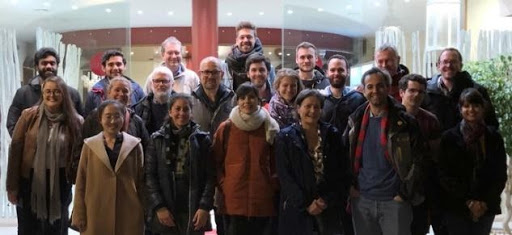
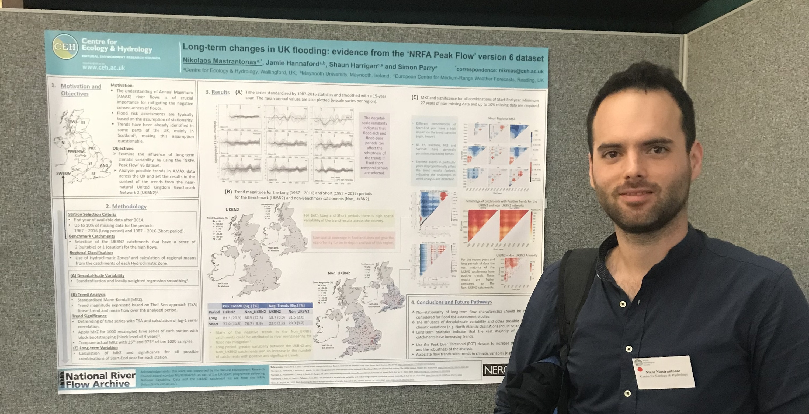
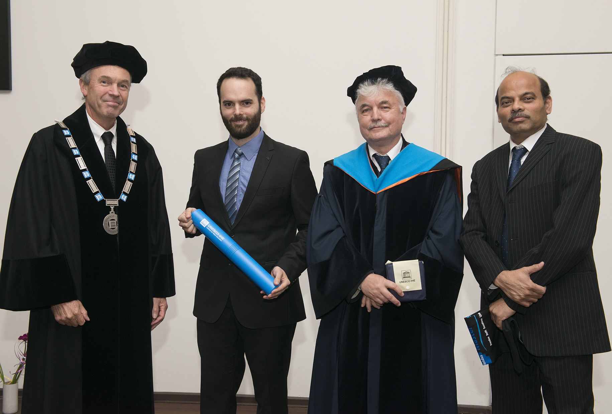
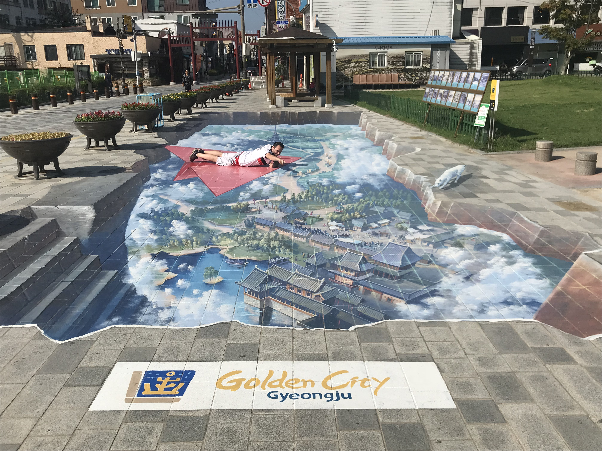

About Me
I am a Civil Engineer – Hydrometeorologist, interested in water-related challenges and the mitigation of their negative consequences. The sector that I am passionate about is the Early Warning Systems; a crucial part of the risk mitigation chain that is financially and ecologically sustainable.

Currently I am an Early Stage Researcher (ESR) at the European Center for Medium-Range Weather Forecasts (ECMWF) and a Ph.D. candidate at the Technical University Bergakademie Freiberg (TUBAF). My research focuses on the sub-seasonal predictability of extreme weather events in the Mediterranean, and I am advised by Dr. Linus Magnusson, Prof. Florian Pappenberger and Prof. Jörg Matschullat. This work is part of the EU funded Climate Advanced Forecasting of sub-seasonal Extremes (CAFE) project.

Previously I worked as Hydrologist at the UK Centre for Ecology & Hydrology (UKCEH), participating in drought-related projects in the UK, Africa and Asia. I was also contributing to the seasonal forecasting of the UK river discharges. I have extensive international experience, and, besides the UK, I have also worked in Greece, Turkey, Egypt, Jordan and Serbia, participating in the design of hydraulic/geotechnical engineering projects and in the supervision of constructions.

I hold an M.Eng. degree in Civil Engineering, specialized in Water Resources and Environmental Engineering, from the National Technical University of Athens (NTUA), in Greece. I continued my studies with an M.Sc. in Flood Risk Management (FRM), with scholarships from the European Union, the Onassis Foundation (Greece), and the Leventis Foundation (Cyprus). This course, which I completed with distinction, is an Erasmus Mundus programme, coordinated by IHE Delft in the Netherlands, and during this period I also studied in Germany, USA, Spain, Slovenia, and conducted my thesis in Japan.

In my free time I participate in initiatives that empower youth. Currently I am a member of the Water Youth Network (WYN) and the Early Warning Systems Young Professional Network subgroup, and during my M.Eng. and M.Sc. studies I was member of the International Association for the Exchange of Students for Technical Experience (IAESTE). Moreover, I am interested in humanitarian and environmental issues, history and geopolitics, and I enjoy meeting people, experiencing different cultures, travelling, swimming and playing basketball.